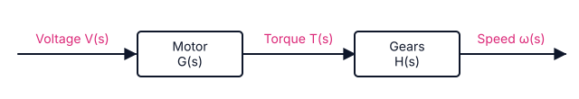
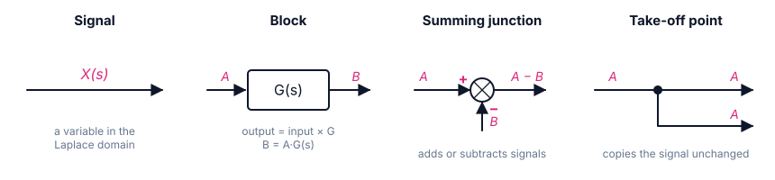
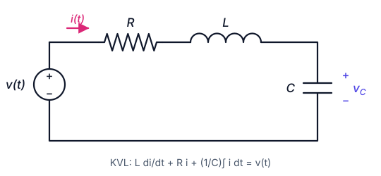
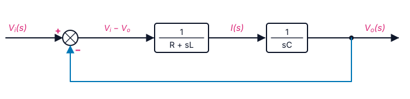
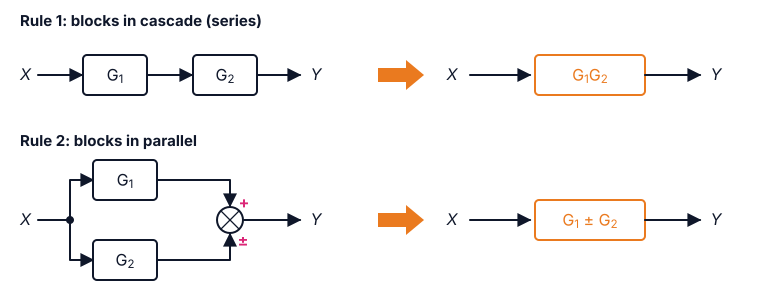
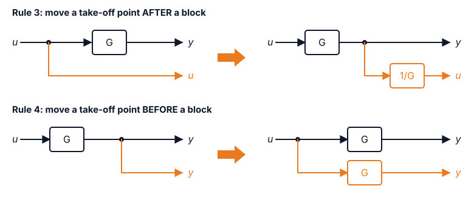
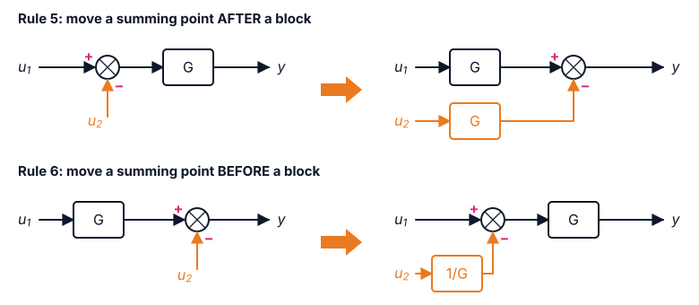
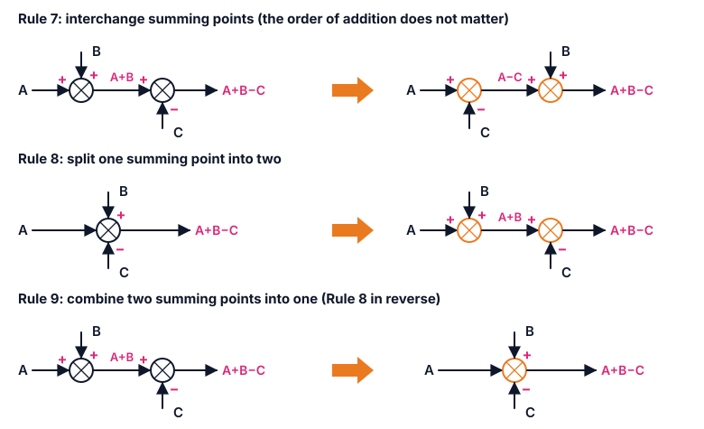
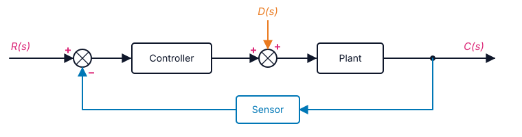
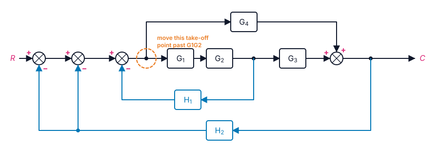

A block diagram is a pictorial representation of the functions performed by each component and the flow of signals in a system. It shows how motors, sensors and circuits relate to each other. In this lesson we define the parts of a block diagram, construct one from a physical system, and reduce it to a single transfer function.
Why block diagrams?
Modern systems, such as a self-driving car with its lidar, cameras, radar, sensor-fusion unit, data bus and steering actuator, are multidisciplinary. Electronic circuits, fluid dynamics and mechanical kinematics do not share a common language, and analysing such a system line by line through its differential equations hides the overall behaviour and overloads the analyst. A block diagram gives one common language.
| Physical schematics | Functional block diagrams | |
|---|---|---|
| Domain | Restricted (electrical, mechanical, ...) | Agnostic (universal) |
| Focus | Components (resistors, valves, gears) | Causality (cause and effect) |
| Mechanics | Raw physics and conservation laws | Mathematical operators (s-domain) |
| Outcome | Component-level analysis | System-level dynamics |
The visual language of control

In the Laplace domain we must keep apart two different kinds of function:
- Signals (input, output, error): Laplace transforms of time-varying quantities such as a voltage or a motion. They travel along the arrows.
- Transfer functions ($G(s)$, $H(s)$): the characteristics of the system objects, such as an inertia or a circuit. They sit inside the blocks.
The elements of a block diagram

- Signal (flow line): a directed line carrying a variable in the Laplace domain.
- Block: a transfer function that multiplies the incoming signal, $B = A \cdot G(s)$.
- Summing junction: adds or subtracts signals according to the signs at its inputs, output $= A - B$.
- Take-off (branch, pick-off) point: sends the same signal to several places without changing it; all branches carry $A$.
From physics to diagram: the RLC circuit
The path is always physical system → time-domain equations → s-domain equations → block diagram.

- Time domain (KVL): $v_i = Ri + L\dfrac{di}{dt} + v_o$.
- Laplace (zero initial conditions): $V_i(s) = RI(s) + sLI(s) + V_o(s)$, so $I(s) = \dfrac{1}{R + sL}\left[V_i(s) - V_o(s)\right]$ and $V_o(s) = \dfrac{1}{sC}I(s)$.
- Each equation becomes a part of the diagram: a summing junction forms $V_i - V_o$, one block gives $I(s)$ and a second gives $V_o(s)$, which is fed back.

Reducing it with the feedback formula below ($G = \dfrac{1}{(R+sL)sC}$, $H = 1$) gives $\dfrac{V_o(s)}{V_i(s)} = \dfrac{1}{LCs^2 + RCs + 1}$, the same result as Lesson 3.
The fundamental theorem: the closed loop

- Forward path: $C = E\,G$.
- Error junction: $E = R - B = R - C\,H$.
- Substitute: $C = (R - CH)G = RG - CGH$, so $C + CGH = RG$ and $C(1 + GH) = RG$.
$$T(s) = \frac{C(s)}{R(s)} = \frac{G(s)}{1 + G(s)H(s)}$$
For positive feedback the sign in the denominator changes: $\dfrac{G}{1 - GH}$. Reduction in practice: two cascaded blocks $G_1$, $G_2$ in a unity feedback loop first merge into $G_1G_2$, and the loop then reduces to $\dfrac{G_1G_2}{1 + G_1G_2}$.
Reduction rules




| Rule | Result |
|---|---|
| 1. Blocks in series | $G_1G_2$ |
| 2. Blocks in parallel | $G_1 \pm G_2$ |
| Negative feedback loop | $\dfrac{G}{1 + GH}$ |
| Positive feedback loop | $\dfrac{G}{1 - GH}$ |
| 3. Move a take-off point behind (after) a block $G$ | Put $1/G$ in the branch |
| 4. Move a take-off point ahead of (before) a block $G$ | Put $G$ in the branch |
| 5. Move a summing point behind (after) a block $G$ | Put $G$ in the added input |
| 6. Move a summing point ahead of (before) a block $G$ | Put $1/G$ in the added input |
| 7. Interchange neighbouring summing points | No change: $A + B - C = A - C + B$ |
| 8 and 9. Split or combine summing points | No change: $A + B - C$ either way |
The reduction strategy
- Scan and reduce cascades: combine any series blocks at once ($G_1 \times G_2$).
- Reduce parallel paths: combine them ($G_1 + G_2$).
- Collapse internal loops: apply the fundamental theorem $G/(1 + GH)$ to minor feedback loops, working from the inside out.
- Unlock and isolate: if loops overlap or are nested, shift summing points (usually to the left) or take-off points (usually to the right) to separate them into distinct inner loops.
- Repeat steps 1 to 4 until a single transfer function $C(s)/R(s)$ remains.
The superposition principle (more than one input)

In a linear system we solve one input at a time. Find the response to the command with $D(s) = 0$, find the response to the disturbance with $R(s) = 0$, and add them:
$$C(s) = C_R(s) + C_D(s)$$
Case study: untangling a knot
Problem: find the closed-loop transfer function $C/R$.

- Move the take-off point of $G_4$ past $G_1G_2$ (Rule 3). The branch now starts after $G_2$ and becomes $\dfrac{G_4}{G_1G_2}$, so it no longer cuts through the inner loop.
- Parallel paths: $G_3$ and $\dfrac{G_4}{G_1G_2}$ now start at the same point and meet at the output, so they combine to $G_3 + \dfrac{G_4}{G_1G_2}$.
- Inner loop: $G_1G_2$ with feedback $H_1$ reduces to $\dfrac{G_1G_2}{1 + G_1G_2H_1}$.
- Cascade: $\dfrac{G_1G_2}{1 + G_1G_2H_1}\left(G_3 + \dfrac{G_4}{G_1G_2}\right) = \dfrac{G_1G_2G_3 + G_4}{1 + G_1G_2H_1}$.
- Combine summing points (Rule 9): the first two summing points both subtract $H_2C$, so together they subtract $2H_2C$. The outer loop has feedback $2H_2$.
- Close the outer loop:
$$\frac{C}{R} = \frac{G_1G_2G_3 + G_4}{1 + G_1G_2H_1 + 2H_2\left(G_1G_2G_3 + G_4\right)}$$
A step-response simulation of the original diagram and of this single transfer function gives the same curve, which confirms the manipulation is sound. Lesson 6 gets the same answer in one step with Mason's gain formula.